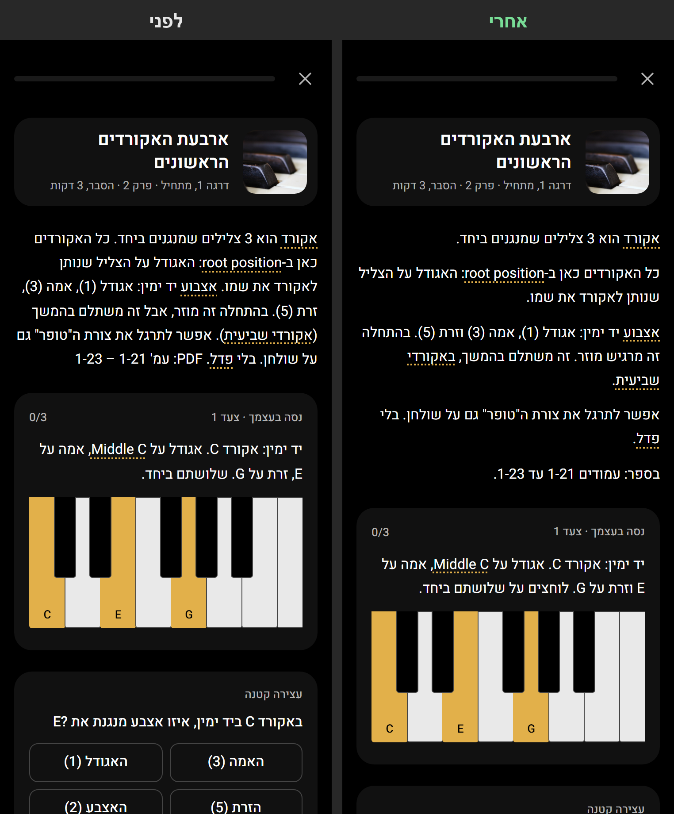
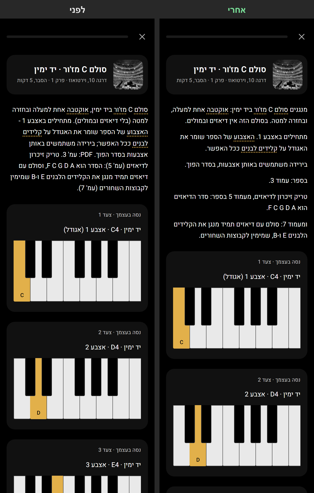
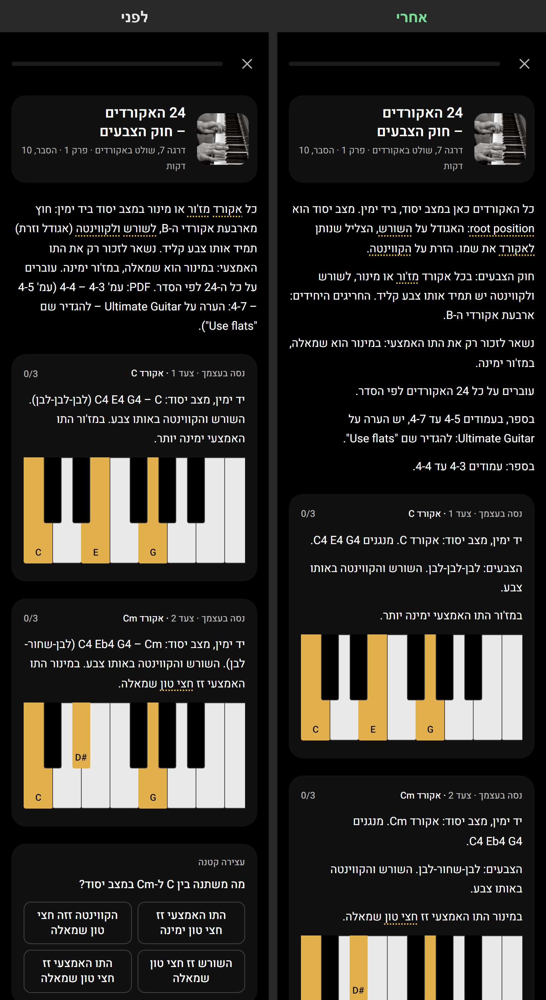

שכתוב השיעורים · בדיקה ראשונה
שלושה שיעורים, באתר עצמו ברוחב טלפון. אחרי מימין, לפני משמאל. אפשר להגדיל עם שתי אצבעות.
ארבעת האקורדים הראשונים
פסקת הפתיחה פורקה לחמש פסקאות קצרות. העמודים בספר בשורה משלהם.

סולם C מז'ור
הסולם, האצבוע והטריק לדיאזים (עמודים 5 ו-7) הופרדו. הצעדים לא השתנו.

24 האקורדים
כל צעד בשלוש שורות קצרות: מה מנגנים, הצבעים, התו האמצעי. השיעור יוצא כ-20% ארוך יותר בגלילה.
